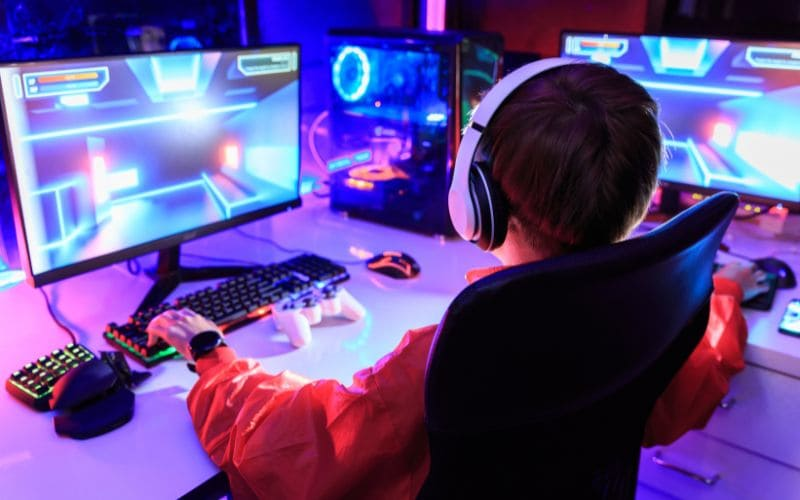
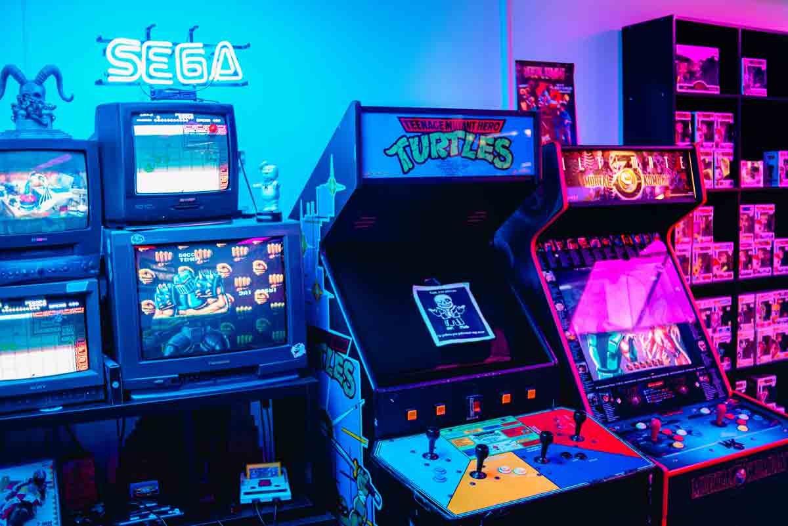

Onde as histórias dos games ganham vida
No universo dos videogames, alguns títulos não são apenas jogos — são experiências marcantes. Eles nos fazem rir, chorar, refletir, e nos deixam lembranças tão vivas quanto as de um bom filme ou livro. Aqui neste site, nossa missão é celebrar os jogos eletrônicos que se destacam por suas histórias, personagens e mundos inesquecíveis.
O que você vai encontrar aqui
Nosso foco está nos principais jogos narrativos da história dos videogames — desde os clássicos até os lançamentos mais impactantes. Falamos sobre:
- Narrativas cinematográficas e emocionantes, como as de Red Dead Redemption, The Last of Us, God of War e Ghost of Tsushima
- Títulos de ação e sobrevivência com enredos marcantes, como Resident Evil, Silent Hill e Alan Wake
- Histórias épicas e personagens inesquecíveis, como Uncharted, Horizon, Mass Effect, Bioshock e muitos outros
- Análises profundas, que vão além da jogabilidade, explorando temas, construção de mundo, trilha sonora e impacto emocional
- Listas, curiosidades, comparativos e teorias, sempre com respeito à inteligência e paixão dos jogadores
Uma Experiência Para Cada Jogador
Seja você um fã dos clássicos como The Last of Us, Red Dead Redemption 2, Heavy Rain ou Mass Effect, ou alguém que explora narrativas independentes como Firewatch, Life is Strange ou Disco Elysium — nosso conteúdo é feito sob medida para ampliar sua experiência e aprofundar sua relação com cada história.
Pronto para sua próxima história?
Explore nossas seções, descubra novos títulos e compartilhe suas experiências. Porque no fim das contas, todo grande jogo começa com uma boa história — e a próxima pode começar agora.